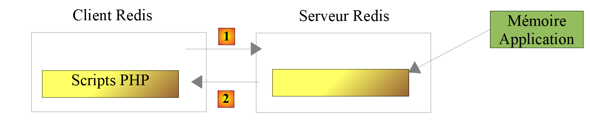
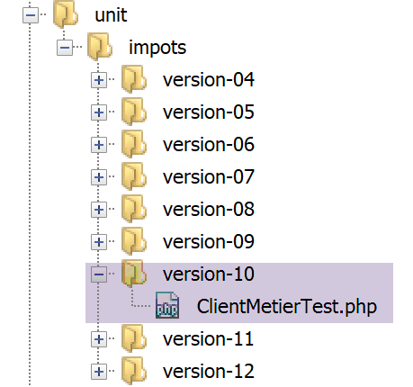
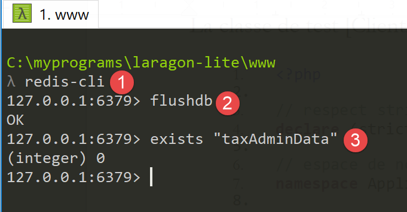

20. Esercizio pratico – versione 10
La versione precedente ha dimostrato che i dati fiscali, condivisi da tutti gli utenti dell’applicazione, dovrebbero essere memorizzati in una memoria con ambito [Application]. Utilizzeremo un server Redis [https://redis.io] per implementarla.
20.1. Redis
La memoria con identificativo [Application] sarà implementata da un server Redis. Gli script PHP che necessitano di questa memoria applicativa saranno client di tale server:

20.2. Installazione di Redis
Laragon viene fornito con un server Redis disattivato per impostazione predefinita. È quindi necessario iniziare attivandolo:

- in [3], attivare il server [Redis];
- in [4], lasciare la porta [6379] utilizzata di default dai client Redis;
I servizi Laragon vengono riavviati automaticamente dopo l'attivazione di Redis:

20.3. Il client Redis in modalità comando
Il server Redis può essere interrogato in modalità comando. Aprire un terminale Laragon (vedi paragrafo "link"):

- in [1], il comando [redis-cli] avvia il client in modalità comando del server Redis;
A luglio 2019, il client Redis può utilizzare 172 comandi per interagire con il server [https://redis.io/commands#list]. Uno di questi, [command count] [2], visualizza questo numero [3].
Presenteremo solo quelli di cui avremo bisogno nella nostra applicazione PHP. Utilizzeremo Redis per un unico scopo: memorizzare un array [‘attribut’=>’valeur’] nella memoria di Redis. Ciò si effettua con il comando Redis [set attribut valeur] [4]. Il valore può poi essere recuperato con il comando [get attribut] [5]. Questo è tutto ciò di cui avremo bisogno.
Potrebbe essere necessario svuotare la memoria di Redis. Ciò si effettua con il comando [flushdb] [6]. Successivamente, se si richiede il valore dell’attributo [titre] [7], si ottiene un riferimento [nil] [8] che indica che l’attributo non è stato trovato. È inoltre possibile utilizzare il comando [exists] [9-10] per verificare l’esistenza di un attributo.
Per uscire dal client Redis, digitare il comando [quit] [11].
20.4. Installazione di un client Redis per PHP
Ora dobbiamo installare un client Redis per PHP:

Esistono diverse librerie che implementano un client Redis. Utilizzeremo la libreria [Predis] [https://github.com/nrk/predis] (luglio 2019). Questa, come le precedenti, si installa con [composer] in un terminale Laragon:

20.5. Codice del server

Il file di configurazione [config-server.json] si evolve come segue:
{
"rootDirectory": "C:/myprograms/laragon-lite/www/php7/scripts-web/impots/version-10",
"databaseFilename": "Data/database.json",
"relativeDependencies": [
"/../version-08/Entities/BaseEntity.php",
"/../version-08/Entities/ExceptionImpots.php",
"/../version-08/Entities/TaxAdminData.php",
"/../version-08/Entities/Database.php",
"/../version-08/Dao/InterfaceServerDao.php",
"/../version-08/Dao/ServerDao.php",
"/../version-09/Dao/ServerDaoWithSession.php",
"/../version-08/Métier/InterfaceServerMetier.php",
"/../version-08/Métier/ServerMetier.php",
"/../version-09/Utilities/Logger.php",
"/../version-09/Utilities/SendAdminMail.php"
],
"absoluteDependencies": [
"C:/myprograms/laragon-lite/www/vendor/autoload.php",
"C:/myprograms/laragon-lite/www/vendor/predis/predis/autoload.php"
],
"users": [
{
"login": "admin",
"passwd": "admin"
}
],
"adminMail": {
"smtp-server": "localhost",
"smtp-port": "25",
"from": "guest@localhost",
"to": "guest@localhost",
"subject": "plantage du serveur de calcul d'impôts",
"tls": "FALSE",
"attachments": []
},
"logsFilename": "Data/logs.txt"
}
Commenti
- righe 5-15: la versione 10 non introduce alcuna novità, ad eccezione dello script [impots-server.php]. Utilizza elementi delle versioni 08 e 09;
- riga 19: una dipendenza necessaria dalla libreria [predis] appena installata;
Il codice del server [impots-server.php] si evolve come segue:
<?php
// rigoroso rispetto dei tipi dichiarati dei parametri delle funzioni
declare (strict_types=1);
// spazio dei nomi
namespace Application;
// gestione degli errori tramite PHP
ini_set("display_errors", "0");
//
// percorso del file di configurazione
define("CONFIG_FILENAME", "Data/config-server.json");
// alias della classe
use \Application\ServerDaoWithSession as ServerDaoWithRedis;
// sessione
$session = new Session();
$session->start();
…
…
// primo log
$logger->write("\n---nouvelle requête\n");
// si recupera la richiesta corrente
$request = Request::createFromGlobals();
// autenticazione solo la prima volta
if (!$session->has("user")) {
…
} else {
// log
$logger->write("Authentification prise en session…\n");
}
// si dispone di un utente valido - si verificano i parametri ricevuti
$erreurs = [];
// devono esserci tre parametri GET
$method = strtolower($request->getMethod());
…
// errori?
if ($erreurs) {
// si invia al cliente un codice di errore 400 HTTP_BAD_REQUEST
sendResponse($response, ["erreurs" => $erreurs], Response::HTTP_BAD_REQUEST, [], $logger);
// completato
exit;
} else {
// log
$logger->write("paramètres ['marié'=>$marié, 'enfants'=>$enfants, 'salaire'=>$salaire] valides\n");
}
// Abbiamo tutto il necessario per lavorare
// Redis
\Predis\Autoloader::register();
try {
// client [predis]
$redis = new \Predis\Client();
// ci si connette al server per verificare se è presente
$redis->connect();
} catch (\Predis\Connection\ConnectionException $ex) {
// errore interno del server
doInternalServerError("[redis], " . utf8_encode($ex->getMessage()), $response, $config['adminMail'], $logger);
// terminato
exit;
}
// creazione del livello [dao]
if (!$redis->get("taxAdminData")) {
// i dati fiscali vengono prelevati dal database
$logger->write("données fiscales prises en base de données\n");
try {
// costruzione del livello [dao]
$dao = new ServerDaoWithRedis($config["databaseFilename"], NULL);
// i dati fiscali vengono inseriti nella memoria di ambito [application]
// il metodo [TaxAdminData]->__toString verrà chiamato implicitamente
$redis->set("taxAdminData", $dao->getTaxAdminData());
} catch (\RuntimeException $ex) {
// si rileva l'errore
doInternalServerError("[dao], " . utf8_encode($ex->getMessage()), $response, $config['adminMail'], $logger, $redis);
// terminato
exit;
}
} else {
// i dati fiscali vengono prelevati dalla memoria di ambito [application]
$arrayOfAttributes = \json_decode($redis->get("taxAdminData"), true);
$taxAdminData = (new TaxAdminData())->setFromArrayOfAttributes($arrayOfAttributes);
// istanziazione del livello [dao]
$dao = new ServerDaoWithRedis(NULL, $taxAdminData);
// log
$logger->write("données fiscales prises dans redis\n");
}
// creazione del livello [métier]
$métier = new ServerMetier($dao);
// calcolo dell'imposta
$result = $métier->calculerImpot($marié, (int) $enfants, (int) $salaire);
// si fornisce la risposta
sendResponse($response, $result, Response::HTTP_OK, [], $logger, $redis);
// fine
exit;
function doInternalServerError(string $message, Response $response, array $infos,
Logger $logger = NULL, \Predis\Client $predisClient = NULL) {
// $message: messaggio di errore
// $response: risposta HTTP
// $infos: tabella informativa per l'invio dell'e-mail
// $result: tabella dei risultati
// $logger: il logger dell'applicazione
// $predisClient: un client [predis]
//
// viene inviata un'e-mail all'amministratore
// SendAdminMail intercetta tutte le eccezioni e le registra autonomamente
$infos['message'] = $message;
$sendAdminMail = new SendAdminMail($infos, $logger);
$sendAdminMail->send();
// si invia un codice di errore 500 al cliente
sendResponse($response, ["erreur" => $message], Response::HTTP_INTERNAL_SERVER_ERROR, [], $logger, $predisClient);
}
// funzione di invio della risposta HTTP al cliente
function sendResponse(Response $response, array $result, int $statusCode,
array $headers, Logger $logger = NULL, \Predis\Client $predisClient = NULL) {
// $response: risposta HTTP
// $result: tabella dei risultati
// $statusCode: stato HTTP della risposta
// $headers: intestazioni HTTP da inserire nella risposta
// $logger: il logger dell'applicazione
// $predisClient: un client [predis]
//
// stato HTTTP
$response->setStatusCode($statusCode);
// corpo
$body = \json_encode(["réponse" => $result], JSON_UNESCAPED_UNICODE);
$response->setContent($body);
// intestazioni
$response->headers->add($headers);
// invio
$response->send();
// registro
if ($logger != NULL) {
$logger->write("$body\n");
$logger->close();
}
// chiusura della connessione [redis]
if ($predisClient != NULL) {
$predisClient->disconnect();
}
}
Commenti
- riga 15: si assegna l’alias [ServerDaoWithRedis] alla classe [\Application\ServerDaoWithSession] per riflettere la modifica nell’implementazione dello script del server;
- righe 18-19: la sessione viene mantenuta. In questo caso ci sono due informazioni da memorizzare:
- il fatto che l’utente si sia autenticato correttamente. Questa informazione ha ambito [session]: è legata a un utente specifico e non è valida per gli altri utenti;
- i dati dell’amministrazione fiscale. Questa informazione ha ambito [application]: non è legata a un utente specifico ma è valida per tutti gli utenti;
- righe 54-64: creazione del client [redis] che comunicherà con il server [redis]. Questo client comunicherà con la porta predefinita del server. Se quest’ultimo non comunicasse sulla sua porta predefinita o non si trovasse sul computer [localhost], sarebbe necessario passare queste informazioni al costruttore della classe [\Predis\Client];
- riga 59: si collega immediatamente il client al server per verificare se quest’ultimo risponde;
- righe 60-65: se la connessione al server Redis non va a buon fine, si invia una risposta di errore al client e verrà inviata un’e-mail all’amministratore dell’applicazione;
- riga 67: si richiede al server [redis] la chiave [taxAdminData]. Se non viene trovata, i dati fiscali vengono prelevati dal database (riga 72);
- riga 75: la chiave [taxAdminData] viene inserita nella memoria [redis] associata alla stringa jSON della variabile [$taxAdminData], che è un oggetto di tipo [TaxAdminData]. Il metodo [$redis→set] richiede una stringa di caratteri come valore della chiave. Cercherà quindi di convertire l’oggetto di tipo [TaxAdminData] in tipo [string]. A questo punto, verrà implicitamente chiamato il metodo [TaxAdminData->__toString]. Questo produce la stringa jSON dell’oggetto [TaxAdminData];
- riga 84: la chiave [taxAdminData] si trova nella memoria [redis], quindi se ne recupera il valore. Si sa che si tratta della stringa jSON di un oggetto [TaxAdminData]. Si decodifica quindi quest’ultima per ottenere un array di attributi;
- riga 85: a partire da questo array, viene istanziato un nuovo oggetto [TaxAdminData];
- riga 87: viene istanziato il livello [dao];
20.6. Codice del cliente

La versione 10 del client è identica alla versione 9. Cambia solo il file di configurazione [config-client.json]:
{
"rootDirectory": "C:/Data/st-2019/dev/php7/poly/scripts-console/impots/version-10",
"taxPayersDataFileName": "Data/taxpayersdata.json",
"resultsFileName": "Data/results.json",
"errorsFileName": "Data/errors.json",
"dependencies": [
"/../version-08/Entities/BaseEntity.php",
"/../version-08/Entities/TaxPayerData.php",
"/../version-08/Entities/ExceptionImpots.php",
"/../version-08/Utilities/Utilitaires.php",
"/../version-08/Dao/InterfaceClientDao.php",
"/../version-08/Dao/TraitDao.php",
"/../version-09/Dao/ClientDao.php",
"/../version-08/Métier/InterfaceClientMetier.php",
"/../version-08/Métier/ClientMetier.php"
],
"absoluteDependencies": [
"C:/myprograms/laragon-lite/www/vendor/autoload.php"
],
"user": {
"login": "admin",
"passwd": "admin"
},
"urlServer": "https://localhost:443/php7/scripts-web/impots/version-10/impots-server.php"
}
Cambia solo, alla riga 24, l’URL del server.
I risultati sono gli stessi della versione 09. Proviamo semplicemente un nuovo caso di errore:

Il risultato nella console è il seguente:
L'erreur suivante s'est produite : {"statut HTTP":500,"erreur":"[redis], Aucune connexion n’a pu être établie car l’ordinateur cible l’a expressément refusée. [tcp:\/\/127.0.0.1:6379]"}
Terminé
20.7. Test [Codeception] del client

La classe di test [ClientMetierTest] della versione 10 è identica a quella della versione 09, con una sola eccezione:
<?php
// rigoroso rispetto dei tipi dichiarati dei parametri delle funzioni
declare (strict_types=1);
// spazio dei nomi
namespace Application;
// definizione delle costanti
define("ROOT", "C:/Data/st-2019/dev/php7/poly/scripts-console/impots/version-10");
…
}
- riga 10: l’ambiente di test è quello del cliente della versione 10;
Prima di iniziare i test, eliminiamo, tramite il client [redis-cli], la chiave [taxAdminData] dalla memoria del server [redis]:

Ora eseguiamo il test:

Ora esaminiamo i log [logs.txt] del server:
05/07/19 08:52:16:396 :
---nouvelle requête
05/07/19 08:52:16:403 : Autentification en cours…
05/07/19 08:52:16:403 : Authentification réussie [admin, admin]
05/07/19 08:52:16:403 : paramètres ['marié'=>oui, 'enfants'=>2, 'salaire'=>55555] valides
05/07/19 08:52:16:407 : données fiscales prises en base de données
05/07/19 08:52:16:420 : {"réponse":{"impôt":2814,"surcôte":0,"décôte":0,"réduction":0,"taux":0.14}}
05/07/19 08:52:16:546 :
---nouvelle requête
05/07/19 08:52:16:555 : Autentification en cours…
05/07/19 08:52:16:555 : Authentification réussie [admin, admin]
05/07/19 08:52:16:556 : paramètres ['marié'=>oui, 'enfants'=>2, 'salaire'=>50000] valides
05/07/19 08:52:16:559 : données fiscales prises dans redis
05/07/19 08:52:16:559 : {"réponse":{"impôt":1384,"surcôte":0,"décôte":384,"réduction":347,"taux":0.14}}
05/07/19 08:52:16:668 :
---nouvelle requête
05/07/19 08:52:16:675 : Autentification en cours…
05/07/19 08:52:16:675 : Authentification réussie [admin, admin]
05/07/19 08:52:16:675 : paramètres ['marié'=>oui, 'enfants'=>3, 'salaire'=>50000] valides
05/07/19 08:52:16:678 : données fiscales prises dans redis
05/07/19 08:52:16:678 : {"réponse":{"impôt":0,"surcôte":0,"décôte":720,"réduction":0,"taux":0.14}}
05/07/19 08:52:16:776 :
---nouvelle requête
…
Abbiamo già detto che ad ogni test viene rieseguito il costruttore della classe di test, il che fa sì che la classe [ClientDao] sottoposta a test venga istanziata ad ogni test con un cookie di sessione inesistente. È quindi come se gli 11 test rappresentassero 11 utenti diversi, con 11 sessioni diverse.
- riga 6: i dati fiscali vengono prelevati dal database;
- righe 13, 20: i dati fiscali vengono prelevati dalla memoria [redis]. Si tratta quindi di una memoria con ambito [application] condivisa da tutti gli utenti dell’applicazione;
20.8. Interfaccia web del server [Redis]
Abbiamo visto che il server [Redis] può essere gestito in modalità comando. Può essere gestito anche tramite un’interfaccia web:

- in [4], l’URL di amministrazione;
- in [5], le chiavi memorizzate dal server;
- in [6], lo stato attuale del server;
Cliccando su [5], si ottengono informazioni sulla chiave [taxAdminData]:

- in [7], il URL che consente di accedere alle informazioni relative alla chiave [taxAdminData] [8];
- in [9], lo stato della chiave;
- in [10], il suo valore: si riconosce la stringa jSON di un oggetto di tipo [TaxAdminData];
- in [11], è possibile eliminare la chiave;
- in [12], è possibile aggiungerne un'altra;